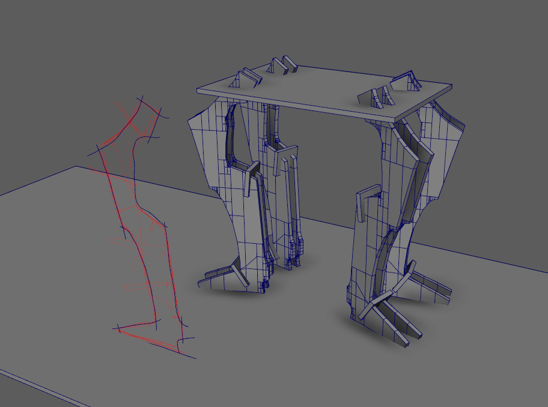
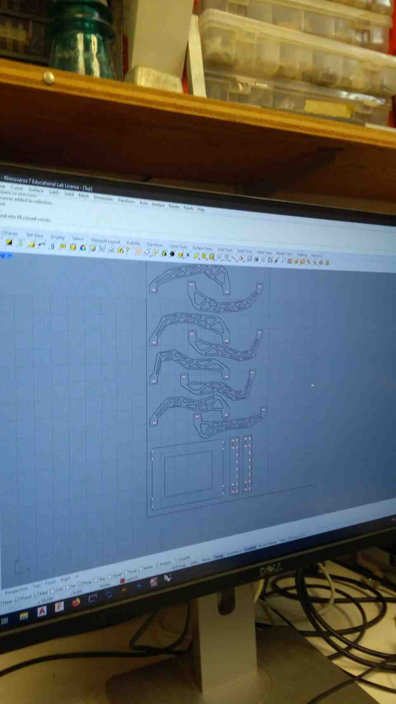
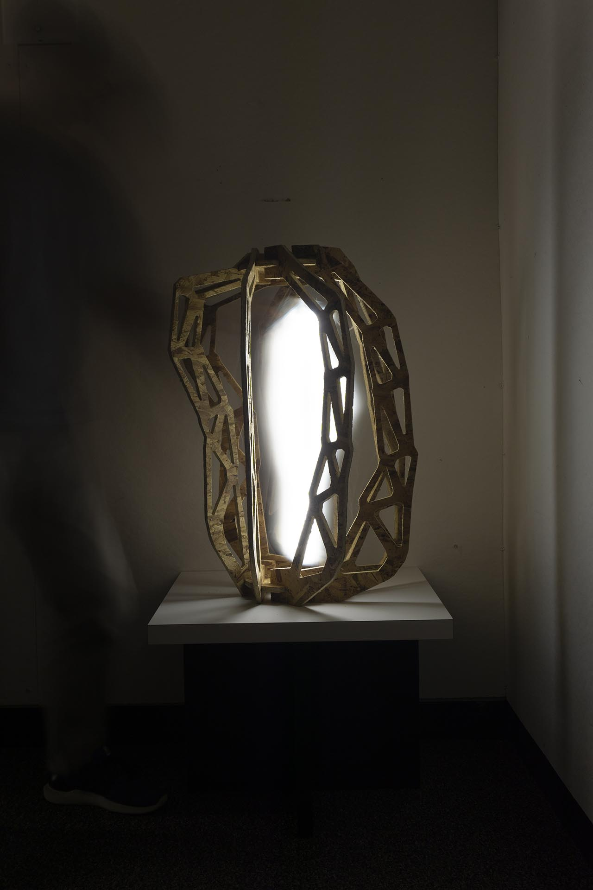

Since the assignment had no constraints other tha making a big thing, I started sketching freehand and 3d to explore some ideas
I meandered for a few hours in Maya, creating sculptural forms, a table with legs, some chair designs until I settled on a parametric chair.

On the next day, after a few minutes in pinterest, I noticed that the internet was saturated with CNC chairs. I decided to investigate a different avenues.
Based on these sketches, I decided to explore more abstract shapes by using inverse kinematics as a tool for generative design. I created to basic skeletons with a shared IK handle in the middle. Then I skinned the rigs to a truss structure.
Using the rigged geometry, it is relatively easy to generate instances where the relative position of the IK handle is defined as a parameter.
To have a smoother file transfer experience, I converted the IK rig to a 2 dimensional setup with NURBS geometry so that I can export 2D CAD files for CAM.
I started thinking about the fabrication constraints of a 4 by 8 foot board.
Then I created a hacky parametric design through Maya's driven keys and timeline.
I made a laser cutter model to test the design before committing to CNC.
The next step was to create dog bones. I did this in Rhino.

Some key points:
Sheets must be flush at corners to ensure vacuum seal.
Outside cuts should go clockwise, while inner cuts are counter-clockwise.
Vacuum at all steps after cut to keep a clean workspace.
The remaining work is mostly filing.
Parts stacked nicely on the planar base. However, 0.5 inches was a bit too much for a snug fit. This finding is different from our group assignment, where 0.5 inches worked perfectly. At this point I assume that material thickness varies from sheet to sheet.
The next day, I decided to go back to a circular design, both for a more sculptural form and as an excuse to try tighter fitting joints. I modeled a circular connector, with 0.48 inch slots.
some notes:
When using smaller sheet, vacuum can be preserved using plastic sheets on the empty areas.
If you forget to select, and cut circles, wing cutters are handy end effectors for creating them.
Wood glue is unavoidable under tight deadlines.
Here is the resulting sculpture! Might become a lamp someday.
To experiment with potential uses as a lamp, I did some experiments with light painting. To do this I went to a dark room and set a 10 second exposure.
And why not use a facemask as diffuser?

Special thanks to Ganit for helping with the photoshoot.
Results of our group assignment were mixed. While in the initial trials 0.49 inches resulted in snug fits, later test by MQ suggested 0.5 was better. In my project that was further down the material stack, 0.48 was even better.